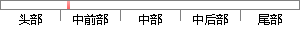

在线问卷调查系统可以利用网络在线采集用户需求以及反馈数据，利用采集到的数据可以推断用户的需求倾向以便及时对这种市场变化做出相应对策和准备,还可以根据采集到的数据分析市场需求以及时调整下一步工作计划。
片段位置图

相似结果|
1
原句片段：在线问卷调查系统可以利用网络在线采集用户需求以及反馈数据，利用采集到的数据可以推
相似片段 1：说到网络问卷调查平台,不了解的人觉得它只是制作问卷...,让需要在线收集数据的客户轻轻松松得到想要的数据。...用户反馈以及活动需求等数据的机构和网站来说,可以省...
|
※ 片段修改建议 ※
近似词参考：- 系统：体系
- 利用：操纵 哄骗 使用 行使 应用
- 网络：收集
- 采集：收集 收罗
- 以及：和
- 利用：操纵 哄骗 使用 行使 应用
- 采集：收集 收罗
- 推断：揣度 揣摸 推测
- 倾向：偏向
- 及时：实时
- 这种：这类
- 变化：转变 变革
- 相应：响应
- 应对：应答
- 准备：筹办 预备 筹备
- 根据：按照 凭据 依据
- 采集：收集 收罗
- 以及：和
- 及时：实时
- 调整：调剂 调解
系统自动生成语句：在线问卷调查体系可以操纵收集在线收集用户需求和反馈数据，操纵收集到的数据可以揣度用户的需求偏向以便实时对这类市场转变做出响应对策和筹办,还可以按照收集到的数据分析市场需求和时调剂下一步工作计划。
注：本片段修改建议为系统自动生成，仅供参考。